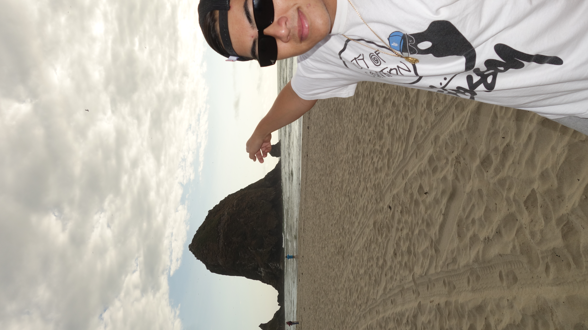
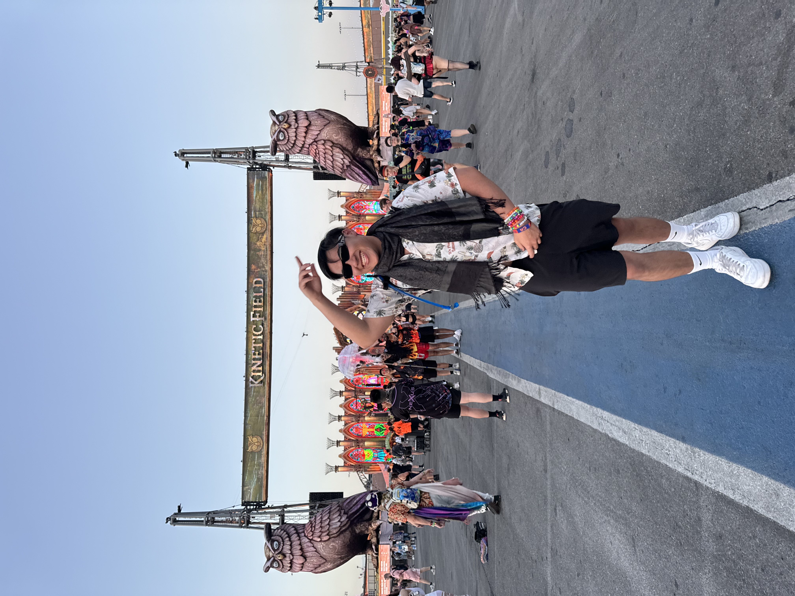
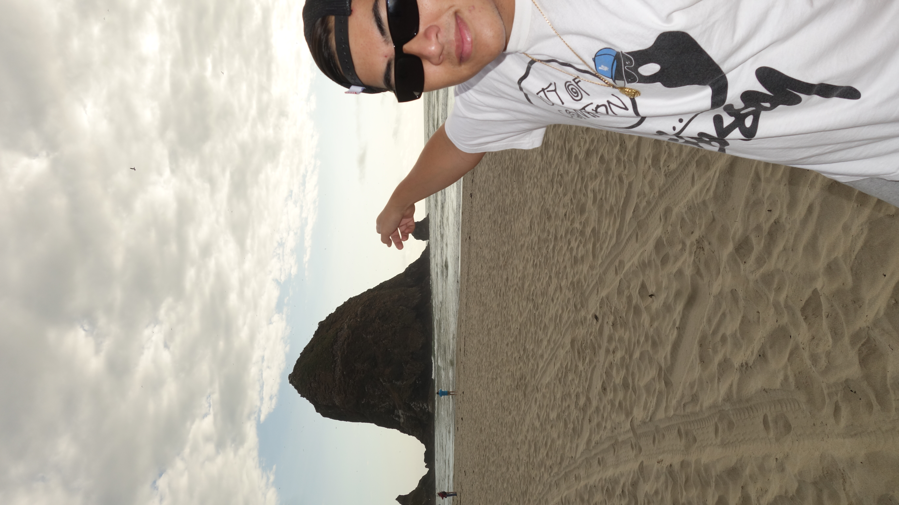
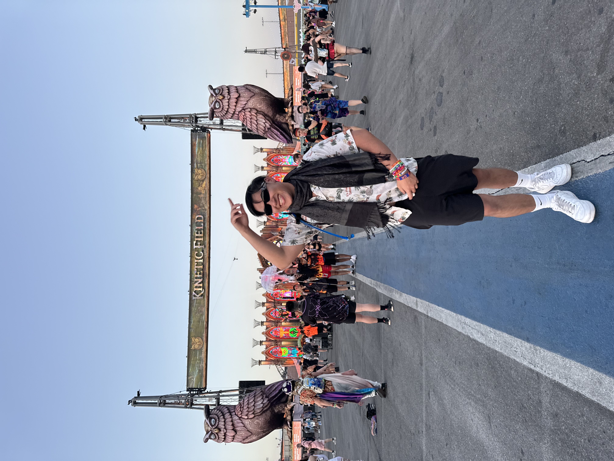

About Me
Hello! My name is Timothy Bui, and I was born on September 23, 2002. I grew up in Torrance, California, and it’s been an amazing journey so far. I attended North High School, where I first developed my passion for learning and exploring new things.
Currently, I’m pursuing my studies at Cal State Fullerton, where I continue to expand my knowledge and work toward my academic and professional goals. The journey at university has been a rewarding experience, filled with challenges and opportunities to grow.
When I’m not studying, I love spending time doing what I enjoy. I’m a huge fan of raves, where I can immerse myself in the music and the energy of the crowd. I also love hanging out with my girlfriend, exploring places like Seaside and the Irvine Spectrum, and just spending quality time with my friends. Whether it’s a fun outing or simply relaxing with those I care about, I always cherish these moments.
Thanks for taking the time to get to know me a little better!
 



Download my Resume